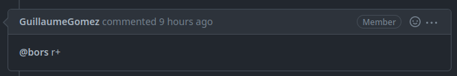
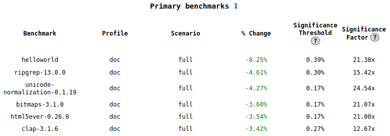
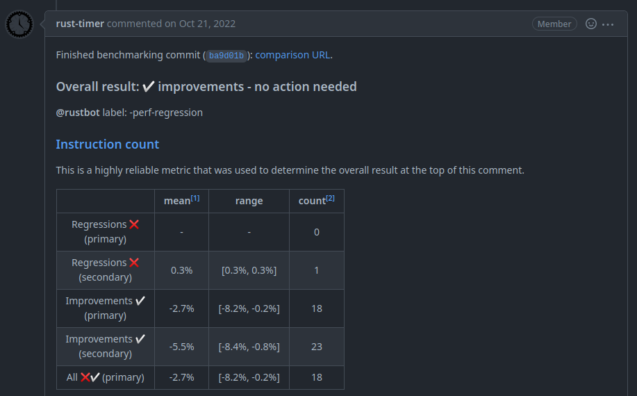

Le processus de merge du compilateur de Rust
présenté par Guillaume Gomez
Qui suis-je ?
Reviewer et contributeur du compilateur de Rust. Membre de :- rustdoc team (team leader)
- docs.rs team
- dev-tools team
Je suis ingénieur chez Huawei.
Une pull-request est ouverte
Un reviewer est assigné par le bot rustbot...
Une pull-request est ouverte
... Et les labels sont aussi ajoutés
Le site web governance
rust-lang.org/governance
Approbation
- Si la pull request :
- N'a pas d'impact sur les performances
- Ne fait pas de "breaking change"
- N'ajoute pas de nouvelle fonctionnalité
- La CI passe

Performance
La pull request a été mergée, mais maintenant il est temps de vérifier si elle a eu un impact sur les performances.perf.rust-lang.org
 
Vérifier de potentielles régressions
Au cas où une pull request introduit des changements qui pourrait introduire une régression, on utilise crater.Crater
crater.rust-lang.org

Astuces pour de potentiels nouveaux contributeurs
- Issues avec le label E-easy ou E-mentor.
- Le rustc dev guide : rustc-dev-guide.rust-lang.org
- Essayez d'écrire des plugins du compilateurs ou contribuez sur clippy pour voir comment le compilateur fonctionne.
Pour vous faciliter la vie si vous souhaitez écrire des plugins du compilateur, jetez un oeil à la crate rustc-tools.
Merci pour votre attention !
More Rust things on< blog.guillaume-gomez.fr >
< guillaume1.gomez@gmail.com >
 @GuillaumeGomez
@GuillaumeGomez
 @imperio@toot.cat
@imperio@toot.cat
 @imperioworld_
@imperioworld_